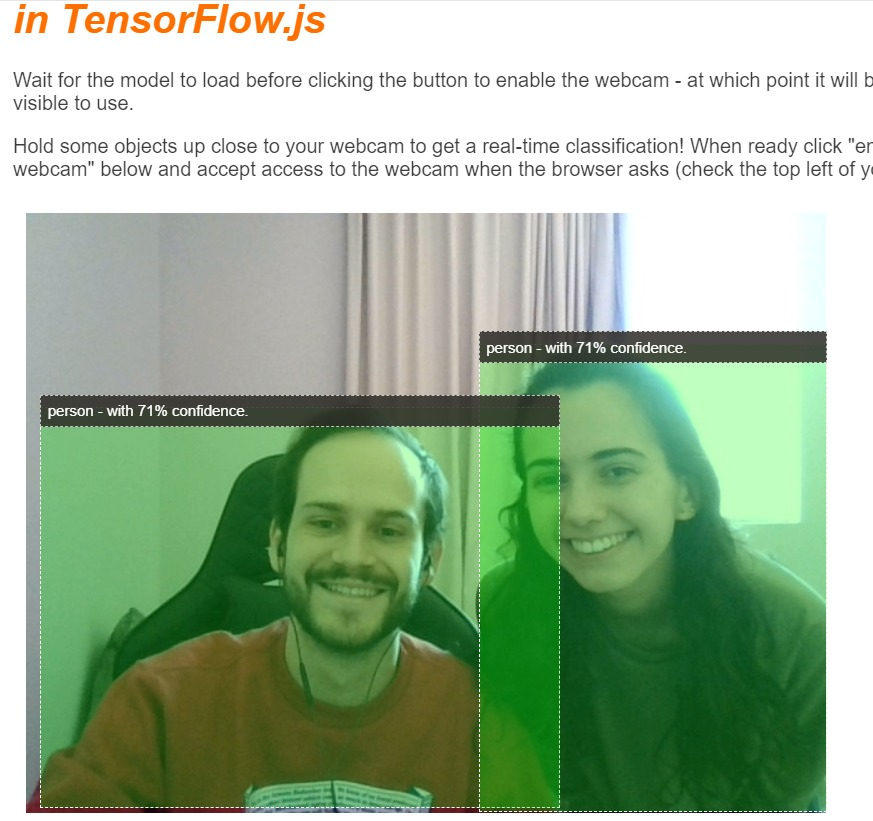
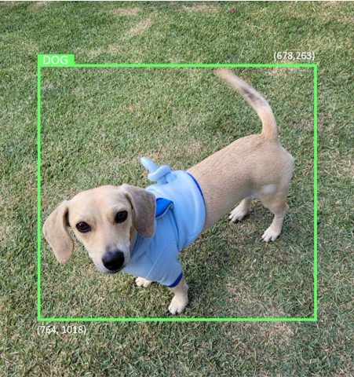
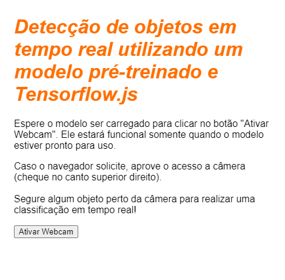
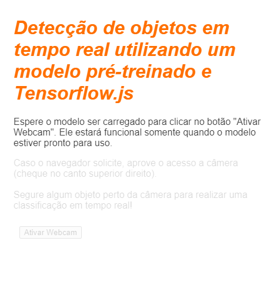
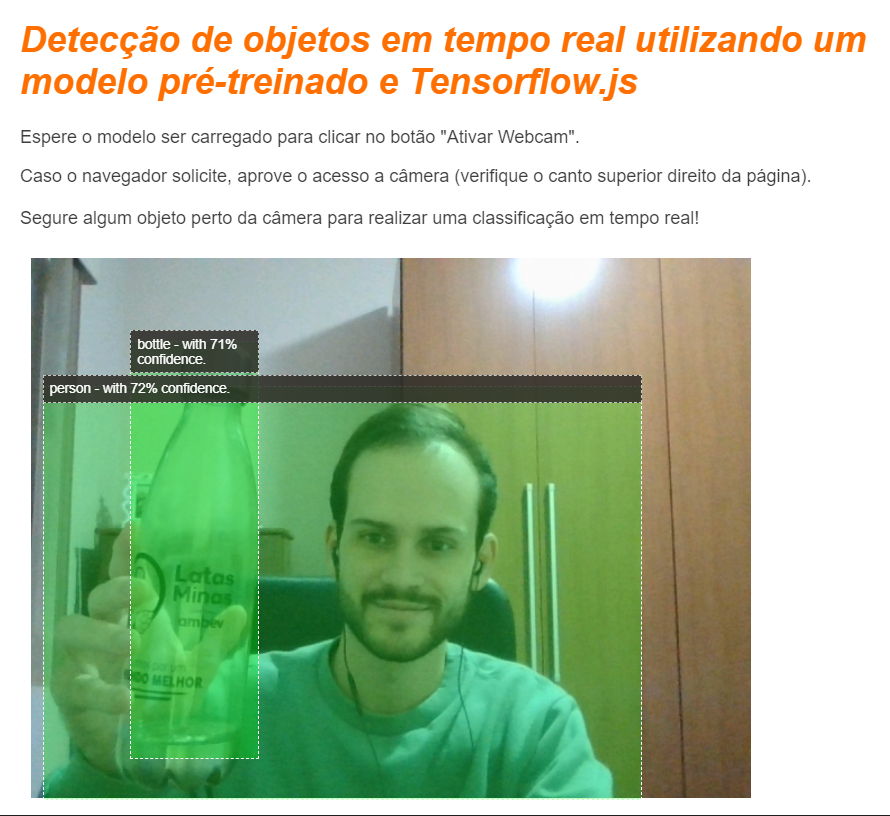

Nesse tutorial, vamos dar os primeiros passos com Machine Learning em Javascript. Utilizando Tensorflow.js, iremos construir uma aplicação web capaz de classificar e detectar objetos comuns de nosso dia a dia utilizando a webcam de qualquer dispositivo.
Ao final, é esperado que você seja capaz de detectar mais de 80 classes diferentes em tempo real e produza resultados como o a seguir:

Esse tipo de aplicação permite com que você crie inúmeras soluções em sua industria ou situações rotineiras. Imagine detectar e contar as pessoas que encontram-se uma área controlada dentro de uma fábrica ou identificar quando seu cachorro está na cozinha da sua casa e enviar uma mensagem para o seu celular... Tudo isso pode ser feito utilizando o modelo que iremos trabalhar nessa seção.
Curtiu?
Então pegue uma dose extra de café e bora criar uma câmera inteligente utilizando Machine Learning 🤓

O Tensorflow.js é uma biblioteca aberta de Machine Learning que roda em qualquer lugar que é possível executar aplicações em JavaScript. Ela é baseada na biblioteca do Tensorflow escrita em python e busca recriar toda a experiência de desenvolvimento da API original no ecossistema JavaScript.
Onde ele pode ser utilizado?
Dada a portabilidade do JavaScript, é possível executar aplicações de Machine Learning nas seguintes plataformas com facilidade:
- No navegador web diretamente no lado do cliente utilizando JavaScript simples
- Em servidores e dispositivos IoT como Raspberry Pi utilizando Node.js
- Aplicações desktop utilizando Electron
- Aplicativos nativos de smartphone utilizando React Native
O Tensorflow.js suporta diferentes backends e se adapta de acordo com o ambiente em que está sendo executado. Atualmente, ele suporta as seguintes formas de execução:
- WebGL na placa gráfica do dispositivo (GPU): Essa é a maneira mais rápida de executar modelos grandes (maiores que 3MB) com aceleração em GPU.
- Web Assembly (WASM) na CPU: utilizado para melhor a performance de CPUs nos dispositivos - incluindo smartphones de gerações mais antigas. Geralmente é utilizada em modelos pequenos (menores que 3MB) que são mais rápidos ao serem executados em uma CPI com WASM to que com WebGL devido ao overhead se subir com os dados para um processador gráfico.
* - CPU: Utilizado quando nenhuma das duas formas de execução anterioes estão disponíveis. É a forma de execução mais lenta.
As grandes vantagens de rodar uma aplicação no lado do cliente
Rodar aplicações de Machine Learning em um navegador web e no lado do cliente proporciona muitos benefícios que valem a pena ser considerados.
Privacidade
Você pode treinar e classificar dados na máquina do cliente sem a necessidade de enviar nenhuma informação para um servidor. Muitas vezes, as aplicações esbarram em requerimentos legais para serem desenvolvidas, como a LGPD, e não podem ter dados trafegando entre servidores. Com o Tensorflow.js é possível construir tudo diretamente no lado do cliente sem a necessidade de recursos externos.
Velocidade
Como não é necessário enviar dados para um servidor, as inferências são mais rápidas. Mais do que isso, é possível ter acesso direto aos sensores do dispositivo como câmera, microfone, GPUs, acelerômetro e etc.
Escala
Com somente um clique, qualquer pessoa do mundo pode abrir um link, acessar uma página no navegador e utilizar a aplicação que você construiu. Não é necessário máquinas caras ou configurações de servidores caros com drivers CUDA.
Custo
A única coisa que é necessária para rodar sua aplicação é internet para hospedar arquivos HTML, CSS, JS, arquivos e modelos. Um custo muito mais barato do que rodar um servidor com GPUs caras 24⁄7.
O Tensorflow.js fornece uma variedade de modelos de machine leaarning pré-treinados em diferentes contextos. Eles foram desenvolvidos pelo time do google e envelopados em classes, tornando o uso bem simples e direto.
Sem dúvidas, utilizar esses modelos é a melhor forma de dar os primeiros passos com Machine Learning em JavaScript. Você pode encontrar uma lista deles na página do Tensorflow.js ou no Tensorflow Hub.
Por quê usar um modelo pré-treinado?
Existem vários beneficios em começar uma aplicação com um modelo pré-treinado se ele se encaixa no problema que você está buscando resolver:
- Não é necessário coletar e preparar os dados de treinamento: Preparar os dados no formato correto de forma com que o modelo de machine learning consiga consumir pode ser demorado e custoso.
- Fácil prototipação: Ao pensar em uma aplicação, não precisamos reinventar a roda - muitas vezes, um modelo pré-treinado é capaz de resolver o problema. Dessa forma, é possível focar nos benefícios que a solução traz e não em seu processo de construção.
- Uso do estado da arte: Geralmente, os modelos pré-treinados são baseados em soluções consolidadas e eficientes. Usá-los, significa trabalhar com o que há de melhor em código aberto no momento.
- Transfer learning: A maioria dos modelos pré-treinados oferecem a possibilidade de transfer learning, que é a prática de transferir o aprendizado de uma tarefa para outra que apresenta um contexto semelhante.
O que é o COCO-SSD?
COCO-SSD é o nome do modelo pré-treinado que iremos utilizar nesse projeto. O objetivo dele é localizar e identificar multiplos objetos em uma imagem. Em outras palavras, ele informa a localização dos objetos que ele é capaz de reconhecer. Um exemplo é mostrado na imagem a seguir:

Se houvesse mais do que um cachorro , o modelo iria fornecer as coordenadas e classe de ambos. O COCO-SSD foi treinado para reconhecer 90 objetos diferentes e que estão presentes em nosso dia a dia como pessoas, carros, cachorros, garradas, etc.
De onde vêm esses nomes?
Os nomes podem soar estranhos, mas eles são frutos de duas siglas distintas:
- COCO: Refere-se ao fato de que o modelo foi treinado no dataset Objetos Comuns em Contexto (*C*ommon *O*bjects in *CO*ntext). Ele possui mais de 200 mil imagens, foi construido pela Microsoft e está disponível gratuitamente.
- SSD: É um detector de shot único (Single Shot Detector). Se você tem interesse em como é arquitetura do modelo, você pode saber mais aqui.
O que você vai precisar:
- Um navegador web
- Conhecimentos básicos de HTML, CSS e JavaScript
Bora codar
Caso não tenha, crie uma conta no Glitch e abra o template que foi desenvolvido para dar inicio ao desenvolvimento do projeto.
No Glitch, clique sobre o nome do projeto e selecione remix this para criar uma cópia do repositório.
Esse é um projeto muito simples com os seguintes arquivos:
- HTML page (index.html)
- Stylesheet (style.css)
- File to write our JavaScript code (script.js)
Estamos prontos para dar o ínicio ao desenvolvimento do projeto!
Todo projeto web necessita de um esqueleto HTML básico. Vamos usá-lo para renderizar a saída do modelo de Machine Learning mais tarde. Por enquanto, vamos definir o básico:
- Um título para a página
- Texto de descrição
- Um botão para ativar a webcam
- Importar o tensorflow.js
Para fazer isso, abra o arquivo index.html remova o conteúdo existente e cole o seguinte trecho de código:
index.html
<!DOCTYPE html>
<html lang="en">
<head>
<title>Detecção de objetos em tempo real utilizando um modelo pré-treinado em Tensorflow.js</title>
<meta charset="utf-8">
<!-- Import the webpage's stylesheet -->
<link rel="stylesheet" href="style.css">
</head>
<body>
<h1>Detecção de objetos em tempo real utilizando um modelo pré-treinado e Tensorflow.js</h1>
<p>Espere o modelo ser carregado para clicar no botão "Ativar Webcam".</p>
<section id="demos" class="invisible">
<p>Caso o navegador solicite, aprove o acesso a câmera (verifique o canto superior direito da página). <br/><br/>
Segure algum objeto perto da câmera para realizar uma classificação em tempo real!</p>
<div id="liveView" class="camView">
<button id="webcamButton">Ativar Webcam</button>
<video id="webcam" autoplay width="640" height="480"></video>
</div>
</section>
<!-- Import TensorFlow.js library -->
<script src="https://cdn.jsdelivr.net/npm/@tensorflow/tfjs/dist/tf.min.js" type="text/javascript"></script>
<!-- Load the coco-ssd model to use to recognize things in images -->
<script src="https://cdn.jsdelivr.net/npm/@tensorflow-models/coco-ssd"></script>
<!-- Import the page's JavaScript to do some stuff -->
<script src="script.js" defer></script>
</body>
</html>
Se tudo correr bem, você irá ver a seguinte tela:

Agora, vamos definir as cores e estilos do nosso projeto. Abra o arquivo style.css e adicione o seguinte trecho de código (sobrescrevendo o anterior):
style.css
body {
font-family: helvetica, arial, sans-serif;
margin: 2em;
color: #3D3D3D;
}
h1 {
font-style: italic;
color: #FF6F00;
}
video {
display: block;
}
section {
opacity: 1;
transition: opacity 500ms ease-in-out;
}
Logo abaixo, adicione algumas classes CSS com os diferentes estados da nossa interface de usuário, como quando gostaríamos de ocultar os botões ou fazer a demonstração indisponível caso o modelo ainda não esteja carregado.
style.css
.removed {
display: none;
}
.invisible {
opacity: 0.2;
}
.camView {
position: relative;
float: left;
width: calc(100% - 20px);
margin: 10px;
cursor: pointer;
}
.camView p {
position: absolute;
padding: 5px;
background-color: rgba(45, 42, 38, 0.85);
color: #FFF;
border: 1px dashed rgba(255, 255, 255, 0.7);
z-index: 2;
font-size: 12px;
}
.highlighter {
background: rgba(0, 255, 0, 0.25);
border: 1px dashed #fff;
z-index: 1;
position: absolute;
}
Boa! Se tudo foi feito corretamente, você irá ver a seguinte tela:

Note como a área de demonstração e botão de "Ativar Webcam" estão indisponíveis. O HTML tem a classe "invisible" aplicada por default. Iremos utilizar JavaScript para desabilitar essa classe assim que o modelo estiver pronto para uso.
Acessando os elementos chave
Primeiro, garanta que é possível acessar as partes chave da página que vamos precisar manipular ao longo do código
script.js
const video = document.getElementById('webcam');
const liveView = document.getElementById('liveView');
const demosSection = document.getElementById('demos');
const enableWebcamButton = document.getElementById('webcamButton');
Verificando o acesso a webcam
Vamos adicionar algumas funções auxiliares para checar se o navegador utilizado suporta o acesso a streaming de vídeo via getUserMedia.
script.js
// Check if webcam access is supported.
function getUserMediaSupported() {
return !!(navigator.mediaDevices &&
navigator.mediaDevices.getUserMedia);
}
// If webcam supported, add event listener to button for when user
// wants to activate it to call enableCam function which we will
// define in the next step.
if (getUserMediaSupported()) {
enableWebcamButton.addEventListener('click', enableCam);
} else {
console.warn('getUserMedia() is not supported by your browser');
}
Ativando o streaming
Agora, ative o streaming e disponibilize uma visualização para o usuário:
script.js
// Enable the live webcam view and start classification.
function enableCam(event) {
// Only continue if the COCO-SSD has finished loading.
if (!model) {
return;
}
// Hide the button once clicked.
event.target.classList.add('removed');
// getUsermedia parameters to force video but not audio.
const constraints = {
video: true
};
// Activate the webcam stream.
navigator.mediaDevices.getUserMedia(constraints).then(function(stream) {
video.srcObject = stream;
video.addEventListener('loadeddata', predictWebcam);
});
}
Por fim, adicione um código temporário só para testar se a webcam está funcionando.
O código a seguir vai assumir que o modelo está carregado e vai ativar o botão da câmera para que você possa clicar. Vamos substituir esse código na próxima etapa então lembre-se de removê-lo no próximo passo!
script.js
// Placeholder function for next step.
function predictWebcam() {
}
// Pretend model has loaded so we can try out the webcam code.
var model = true;
demosSection.classList.remove('invisible');
Ótimo! Provavelmente você está vendo uma tela similar a essa:
Carregando o modelo
Agora, vamos carregar o modelo COCO-SSD.
Assim que ele terminar de ser inicializado, iremos habilitar o botão de ativar a webcam. Cole o código a seguir sobre o código temporário que adicionamos ao final da última etapa.
script.js
// Store the resulting model in the global scope of our app.
var model = undefined;
// Before we can use COCO-SSD class we must wait for it to finish
// loading. Machine Learning models can be large and take a moment
// to get everything needed to run.
// Note: cocoSsd is an external object loaded from our index.html
// script tag import so ignore any warning in Glitch.
cocoSsd.load().then(function (loadedModel) {
model = loadedModel;
// Show demo section now model is ready to use.
demosSection.classList.remove('invisible');
});
Classificando um frame a partir da Webcam
Adicione o código a seguir para que a aplicação consuma continuamente os frames da webcam e passe ao modelo para que eles sejam classificados.
O modelo irá retornar as coordenadas, precisão e classe das predições. Essas informações serão utilizadas para renderizar os resultados.
script.js
var children = [];
function predictWebcam() {
// Now let's start classifying a frame in the stream.
model.detect(video).then(function (predictions) {
// Remove any highlighting we did previous frame.
for (let i = 0; i < children.length; i++) {
liveView.removeChild(children[i]);
}
children.splice(0);
// Now lets loop through predictions and draw them to the live view if
// they have a high confidence score.
for (let n = 0; n < predictions.length; n++) {
// If we are over 66% sure we are sure we classified it right, draw it!
if (predictions[n].score > 0.66) {
const p = document.createElement('p');
p.innerText = predictions[n].class + ' - with '
+ Math.round(parseFloat(predictions[n].score) * 100)
+ '% confidence';
p.style = 'margin-left: ' + predictions[n].bbox[0] + 'px; margin-top: '
+ (predictions[n].bbox[1] - 10) + 'px; width: '
+ (predictions[n].bbox[2] - 10) + 'px; top: 0; left: 0;';
const highlighter = document.createElement('div');
highlighter.setAttribute('class', 'highlighter');
highlighter.style = 'left: ' + predictions[n].bbox[0] + 'px; top: '
+ predictions[n].bbox[1] + 'px; width: '
+ predictions[n].bbox[2] + 'px; height: '
+ predictions[n].bbox[3] + 'px;';
liveView.appendChild(highlighter);
liveView.appendChild(p);
children.push(highlighter);
children.push(p);
}
}
// Call this function again to keep predicting when the browser is ready.
window.requestAnimationFrame(predictWebcam);
});
}
A parte mais importante desse código é o model.detect.
Todos modelos pré-treinados do Tensorflow.js têm uma função como essa. Ela é responsável por realizar o processo de inferência do modelo.
Inferência é o processo de pegar uma entrada e passar através do modelo de machine learning (várias operações matemáticas) e então gerar resultados. Em tensorflow, as predições são retornadas na forma de objetos JSON, que são bem simples de serem utilizados.
Você pode encontrar todos os detalhes da função de predição na documentação do COCO-SSD.
Ao rodar o código, o resultado final deve ser similar a este:

Parabéns! Você deu seus primeiros passos no uso de Tensorflow.js e Machine Learning no navegador. Agora, só depende de você pegar tudo que aprendeu para criar algo criativo e útil :)
Resumo
Nesse treinamento nós:
- Aprendemos os benefícios de se utilizar Tensorflow.js em comparação ao Tensorflow padrão
- Discutimos situações em que é possível utilizar modelos pré-treinados
- Criamos uma aplicação web completa que é capaz de classificar objetos em tempo real, incluindo:
- Criação de uma página HTML
- Definição de estilos para elementos HTML e classes
- Configuração e carregamento de um modelo pré-treinado em Tensorflow.js
- Uso do modelo para fazer classificações continuas do streaming da webcam e renderização dos resultados.
Próximos passos
Compartilhe as suas criações nas redes sociais! Você pode desenvolver inúmeras aplicações com os aprendizados desse seção.
Veja todos os objetos que o modelo utilizado é capaz de reconhecer e pense como você pode utilizar o conhecimento adiquirido para criar algo inovador.
Poste seu resultado com a tag #MadeWithTFJS em qualquer rede social e o time do Tensorflow estará de olho nos resultados.
Outros projetos para se aprofundar
Detecção customizada de objetos no navegador utilizando Tensorflow.js
Reconhecimento de áudio utilizando transfer learning em TensorFlow.js